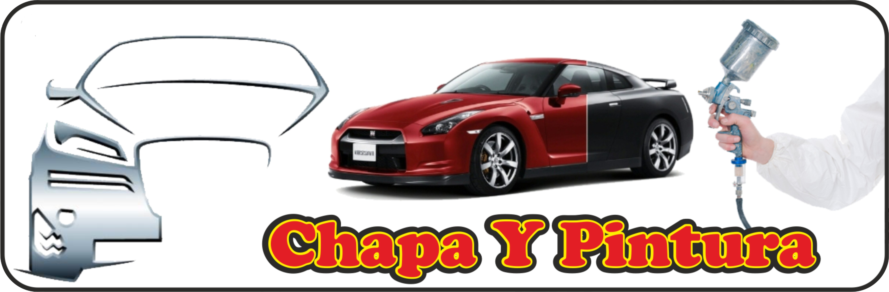

Chapa y Pintura

- La chapa y pintura moderna ha avanzado considerablemente en tecnología, esto debido a que la industria automotriz igualmente se ha desarrollado de manera importante, incluyendo nuevos materiales, láminas más delgadas, diferentes aleaciones de plástico, uso cada vez más frecuente del aluminio, etc.
- Para escoger un buen taller de hojalatería y pintura, es necesario tomar en cuenta que su personal de trabajo conozca el uso de las herramientas modernas y que cuente con los equipos necesarios para lograr reparaciones de primera calidad.
- En Servi Independencia tenemos la tecnología y las técnicas necesarias para dar un acabado original a cualquier reparación, en cualquier tipo de auto. En nuestro centro de laminado y pintura automotriz contamos con el mejor equipo, y el material de más alta calidad para dar ese acabado original a los autos, el igualado de colores lo hacemos por medio de novedosos sistemas, utilizando los mismos códigos de planta de cada armadora, esto anula las comunes fallas al respecto.
- Un trabajo que deje un acabado original, se realiza con herramienta especializada, logrando trabajar la lámina con habilidad y conocimiento hasta dejarla como estaba inicialmente.
- Los procesos de reparación, preparación y acabados están avalados por los fabricantes y distribuidores de las mejores marcas de productos automotrices, y manteniendo continuo contacto con ellos, logramos estar siempre al frente en todas las innovaciones.